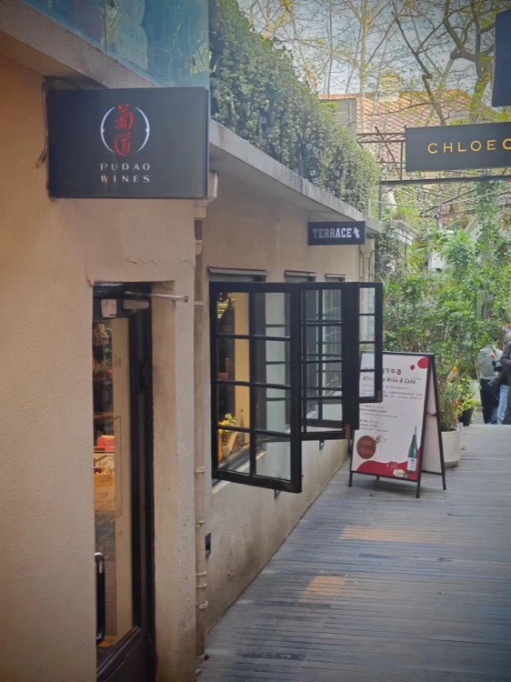
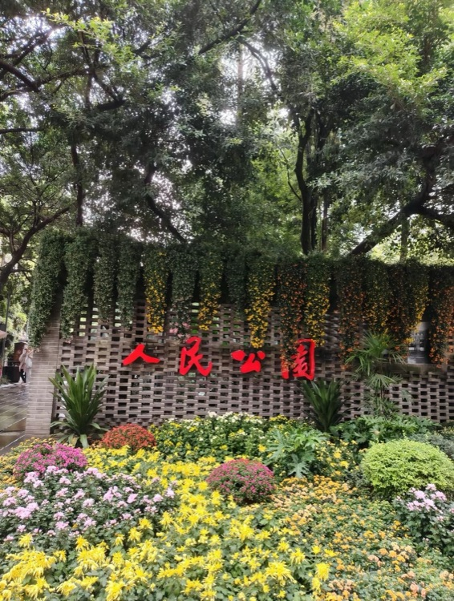
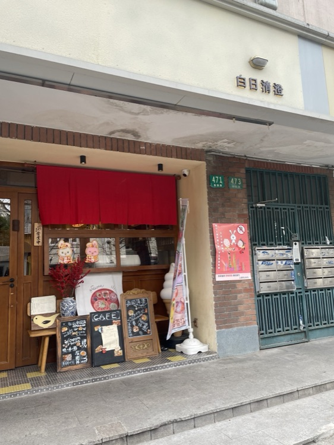
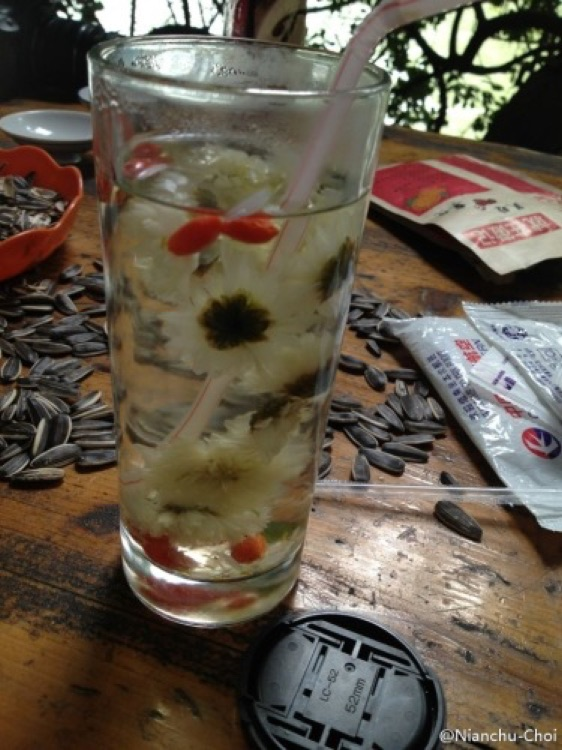

09:41
✧
沈听澜
走遍城市的旅人
当前所在
上海
主题
历史路书
数据能力
高德 POI
实时坐标 · 营业时间
小红书口碑
真实点评 · 打卡热度
AI 行程引擎
多工具查证 · 双源可溯源
上海 · 梧桐区
上海

北京 · 老城
北京
成都 · 慢生活
成都

上海 · 武康路
上海
上海 · 转角
上海

成都 · 盖碗茶
成都

上海
☰
🎤
通过「嘿，小莫」
语音唤醒
· 或按住下方按钮唤醒小莫
↵
长按右侧电源键也能唤醒
小莫
下一站，你说了算
梧桐叶落，才算见过上海的秋。
‹
上海
· 小莫已懂你
💬 重新跟小莫说
💡
小莫听懂你要的了
确认无误就生成；想改，直接告诉小莫
已为你识别
生成我的路书 →
AI 大脑调用中…
小莫正在查，别急
不是拍脑袋，是调多个工具查过再推荐
‹
上海
· 路书
分享 ↗
上海 · 微醺建筑
周末 2 天 · 慢慢逛
导出
🎤
想改？直接跟小莫说
◫
路线
☰
行程
◎
同路人
卫星
街道
＋
－
⟳
◫
值得的走法 · 按天分色
综合
看口碑
看地点
◫
路线速览
◎
同路人
看看别人怎么走这条线 · 一起聊聊
‹
03 / 理念
为什么是「真源」？
市面上 AI 旅行产品最大的三个坑，莫友一一解决。
vs 同行
查看数据集 ↗
✧
小莫 · AI 大脑
正在听你说…
✕
🎤
✧
我的小莫
捏一个陪你旅行的小家伙
✕
身形
颜色
配饰
收下小莫